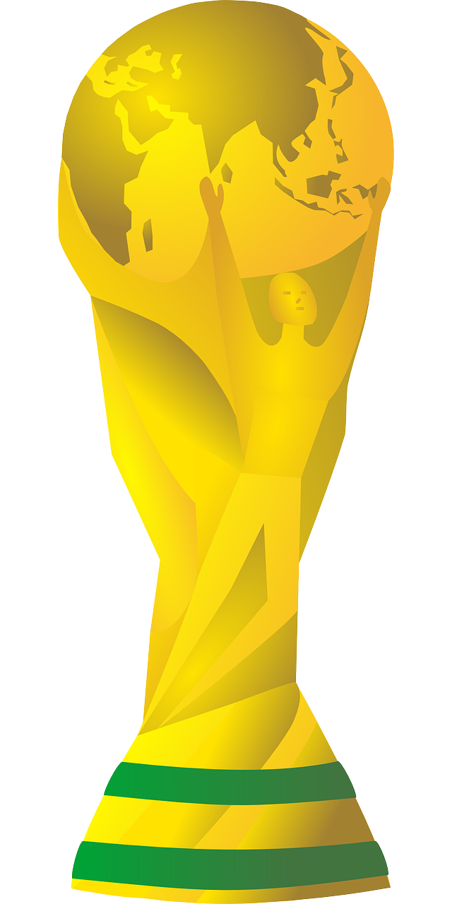

WC 2026 Probability DashboardMonte Carlo simulation · 100,000 runs · Dixon-Coles + Elo ensemble · Updates hourly
| Team | Model | Polymarket | Kalshi | Consensus | Edge |
|---|
| Team | R32 | R16 | QF | SF | Final | Win |
|---|
| Player | Model | Polymarket | Kalshi | Consensus | Edge |
|---|
| Player | Goals | Assists | Pens | Apps | G+A |
|---|
| # | Player | Value | Min |
|---|
Confirmed ≥70% to qualify 30–70% Eliminated or <10%
| Points | Goal Diff | P(Qualify) |
|---|
Methodology
How the simulation works — model design, tournament rules, tiebreakers, third-place qualification, and data sources.
Tournament probabilities are generated via 100,000 Monte Carlo simulations of the full FIFA World Cup 2026. Each simulation samples independent match outcomes from a statistical model, applies the official group-stage tiebreaker rules, assigns the 8 best third-place finishers to their R32 slots using the official FIFA Annex C table, and carries results through R32 → R16 → QF → SF → Final. Aggregating across 100,000 runs gives each team a probability distribution over every stage of the tournament.
The simulation runs hourly using live match data from football-data.org. As group matches complete, the model re-fits on observed results and group states are locked for finished matches — only the remaining matches in each group are simulated.
The primary match model is a Dixon-Coles bivariate Poisson model, which predicts the joint distribution of (home goals, away goals) for any match. It estimates each team's attacking and defensive strength as latent parameters, fitted via maximum likelihood, and includes a low-score correction factor (the ρ parameter) that adjusts for the empirically observed excess of 0-0, 1-0, 0-1, and 1-1 scorelines. An L2 regularisation penalty (ridge = 1.0) is applied to prevent degenerate attack/defence estimates for teams with limited data.
The model is trained on ~2,100 international matches from 2022 to present — including all completed WC 2026 group-stage matches — using time-decay weighting so that recent results carry more influence (half-life ≈ 400 days). Match importance is also weighted by competition tier: World Cup matches receive full weight (1.0), UEFA Euro and Copa América 0.88, AFCON/AFC 0.85, Nations League 0.72, qualifying 0.60–0.62, and friendlies 0.30.
For matches where Expected Goals data is available, the model uses xG rather than actual goal counts as the observation. This reduces noise from finishing variance — a team that created 2.4 xG and scored 0 is treated as a stronger team than a 0 xG scoreline implies. xG data is sourced from StatsBomb Open Data and covers 314 matches across 6 competitions (WC 2022, EURO 2024, Copa América 2024, AFCON 2023, EURO 2020, WC 2018). A calibration factor (≈ 0.84) is applied to align StatsBomb's xG scale with observed goal rates. Matches without xG data use conventional goal counts and the full Dixon-Coles ρ correction.
An independent Elo rating system is seeded from the official FIFA 2026 pre-tournament rankings (converted to a 1500-base Elo scale) and updated with a K-factor of 60 from each completed WC 2026 match in chronological order. The Elo model provides a stable long-run prior on team quality that is robust to small-sample noise, particularly for teams without rich recent tournament data.
The Elo model converts win probability to an implied pair of Poisson rates and builds a full score matrix, so it can produce scoreline distributions (not just win/draw/loss) consistent with the chosen probability. All WC matches are treated as neutral-venue games.
Match outcome distributions are drawn from an equal-weight 50% Dixon-Coles / 50% Elo ensemble. Both the win/draw/loss probabilities and the underlying score matrices are blended at 50/50, ensuring that goal-by-goal simulation samples scorelines consistent with the blended model — not just the DC or Elo component alone. Equal weighting balances recent match performance (DC) against long-run team quality (Elo/FIFA ranking), and was chosen after a 100K-simulation comparison against market outright odds across all 48 teams.
The Win Odds and Knockout tabs place our model's estimate side by side with live prices from two prediction markets — Polymarket (a crypto-settled prediction market) and Kalshi (a US-regulated, CFTC-supervised exchange). These are real-money markets, so their prices are a strong external benchmark: they aggregate the views of many participants who are financially exposed to being wrong.
KXMENWORLDCUP series, one contract per team.KXWCROUND series, which prices each team's probability of reaching the Round of 16, Quarter-Final, Semi-Final, and Final. Polymarket is not shown on the bracket because it lists only a reach-final market, not the earlier rounds.Market prices are refreshed on every hourly run. If a market is briefly unreachable, the dashboard retains the last known prices and flags them as stale rather than blanking the comparison.
Raw market prices include a margin (the "vig" or over-round) that makes the implied probabilities sum to more than 100%. To compare fairly against our model — whose probabilities sum to exactly 100% by construction — we remove this margin before display:
On the Win Odds tab, Edge = Model − market consensus (the consensus being the mean of the available de-vigged market prices), shown in percentage points. A positive Edge (green ▲) means our model assigns a team a higher chance than the market — a potential value opportunity; a negative Edge (red ▼) means the market rates the team higher than we do. Edge is a measure of disagreement, not a guarantee: persistent gaps may reflect a genuine model insight or a model blind spot (for example, limited cross-confederation data — see Limitations).
All three sources measure the same event at each stage: the probability of advancing to the next round, i.e. winning that match in full time, extra time, or a penalty shootout. The simulation resolves a knockout draw as a 50/50 shootout (consistent with the historical ~50% outcome of World Cup penalty shootouts), so the model's reach-round probability is directly comparable to the market's reach-round contract.
The Players tab has three parts, each with a distinct data basis.
Our top-scorer probability is a by-product of the 100,000 tournament simulations. In each simulated tournament, every knockout scoreline the model samples is distributed across that team's plausible scorers via a multinomial draw, where a player's share of team goals blends (a) goals already scored this tournament, (b) historical goals-per-90 from StatsBomb, and (c) a small role prior, plus an "other players" bucket so squad depth absorbs realistic mass. Each player's final tally is their current goals plus simulated future goals; the per-simulation leader (FIFA tiebreak: goals → assists) wins that run's Golden Boot. Aggregating over all runs gives P(finish top scorer), shown next to the de-vigged Polymarket and Kalshi top-scorer markets with an Edge column. This is a deliberately simple, current-form-driven estimate: it does not know squad roles, penalty duties, or injuries, so large gaps versus the market (either direction) often reflect information the model can't see — treat Edge as a discussion point, not a lock.
Goals, assists, penalties and appearances for the current tournament come from football-data.org and refresh every hourly run.
The advanced metrics — xG, xA, shots, shots on target, key passes, progressive passes, pass %, goalkeeper saves, and their per-90 rates — are computed from raw event data in StatsBomb Open Data, aggregated per player across six completed tournaments (World Cup 2022 & 2018, EURO 2024 & 2020, Copa América 2024, AFCON 2023). These are a player's historical pedigree, not live WC 2026 stats — free public sources do not publish live advanced player data during the tournament. A player who has not featured in those six events won't appear in this section, and a breakout star of this World Cup will show live goals/assists but no advanced history. Names are matched across sources by normalized name tokens; occasional mismatches are possible.
WC 2026 has 48 teams across 12 groups (Groups A–L), each of 4 teams. Every team plays 3 group-stage matches (round-robin). Points: Win = 3, Draw = 1, Loss = 0.
When teams are level on points, the official WC 2026 tiebreaker order is applied in sequence:
H2H tiebreakers are computed on the sub-table of only the tied teams' mutual fixtures. If 3 or more teams are tied, the H2H rules are applied to the full sub-table of all tied teams simultaneously.
The 8 best third-place finishers across all 12 groups advance to the Round of 32. "Best" is determined by overall group-stage record (points → goal difference → goals scored). Head-to-head records do not apply here because the third-place teams come from different groups.
Once the 8 qualifying third-place teams are known, their R32 slot assignments are not random — they are determined by the official FIFA WC 2026 Regulations, Annex C. Annex C is a pre-specified lookup table with 495 rows, one for each possible combination of which 8 of the 12 groups (A–L) supply the qualifying third-place teams (C(12, 8) = 495). Each row specifies exactly which R32 bracket slot each third-place team fills, ensuring the bracket always has a valid structure regardless of which groups qualify.
For example, if the 8 best third-place teams come from groups A, B, D, E, F, I, J, and L, Annex C prescribes precisely which slot in the R32 draw each of those groups' third-place finishers occupies — determining, for instance, whether the 3rd-place team from Group B faces the winner of Group D or the winner of Group E. The simulation looks up the correct Annex C row every iteration rather than using an approximation, so bracket path probabilities are exact under the official rules.
The 3rd-Place Guide tab shows the simulation's estimate of P(qualify | pts, GD), derived by recording whether each simulated third-place team made the best-8 cut across all 100,000 runs.
The bracket follows the official FIFA WC 2026 draw. R32 winners advance to R16, R16 winners to QF, QF winners to SF, and SF winners to the Final. No group-based seeding is applied in the knockout rounds — the bracket is fixed from the R32 draw. Extra time and penalty shootouts are simulated using the same match model for draws at full time.
Each simulated tournament is an independent draw, so the estimated probability for any outcome is a sample proportion with a binomial standard error of SE = √(p(1−p) / n). This is maximised at p = 0.5, giving SE = 0.5 / √n. The charts below show how precision and runtime scale with simulation count, benchmarked on this server:
At 100,000 simulations, a team estimated at 20% win probability has a 95% confidence interval of roughly [19.7%, 20.3%] — precise enough that hourly updates reflect genuine changes in the tournament state rather than sampling noise. The gains from going to 150K or 200K are marginal (≤0.05 pp improvement in SE) at the cost of doubling compute time per hourly run, so 100K is the practical sweet spot.
All probabilistic models of sporting outcomes have real limitations. These estimates are particularly sensitive to a few known issues:
| Source | Data | Refresh |
|---|---|---|
| football-data.org | Live WC 2026 group-stage match results and standings | Each hourly run |
| martj42/international_results | ~2,100 historical international matches from 2022–2026 (training data) | Fixed at build |
| StatsBomb Open Data | xG data: WC 2022, EURO 2024, Copa Am 2024, AFCON 2023, EURO 2020, WC 2018 (314 matches) | Fixed at build |
| Polymarket | Outright winner market prices (de-vigged) for the Win Odds comparison | Each hourly run |
| Kalshi | Outright winner + reach-round (R16/QF/SF/Final) market prices (de-vigged) | Each hourly run |
| FIFA Official Rankings (June 2026) | Pre-tournament team ratings for Elo seeding | Fixed at tournament start |
| FIFA WC 2026 Official Bracket + Annex C | R32/R16/QF/SF slot assignments; third-place slot lookup (495 rows) | Fixed |
| Parameter | Value | Notes |
|---|---|---|
| Monte Carlo iterations | 100,000 | Per hourly run |
| Random seed | 42 | Reproducible within a run |
| Score model | Dixon-Coles bivariate Poisson + xG | ρ low-score correction; xG used where available |
| Ensemble weights | 50% Dixon-Coles / 50% Elo | Both score matrices blended at 50/50 |
| Training data time decay | ξ = 0.0018 / day | Half-life ≈ 385 days; WC 2022 ≈ 10% weight |
| Match venue | Neutral | No home-field adjustment |
| L2 regularisation | ridge = 1.0 | Prevents degenerate attack/defence for data-sparse teams |
| Tiebreakers | Full H2H rules (WC 2026 official) | FIFA ranking as final tiebreaker |